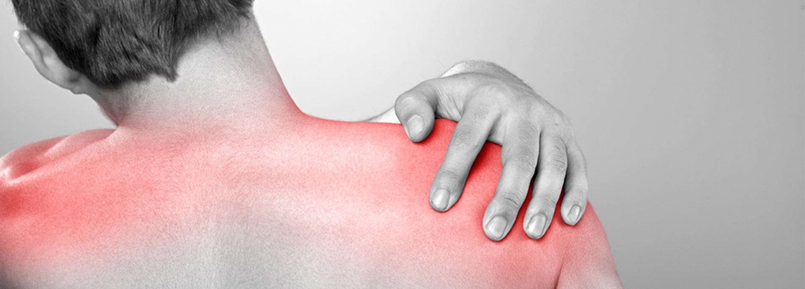
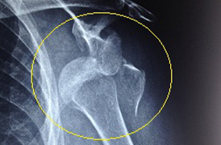
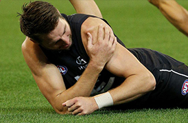
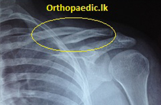
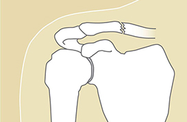
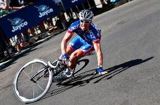
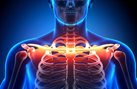
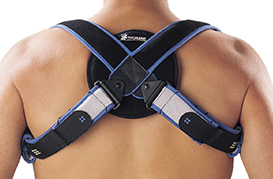

Overview

SHOULDER DISLOCATION

What Is Shoulder Dislocation?
The shoulder joint has two bones; shoulder blades and the ‘head’ of bone in the upper arm. The two bones are kept together by a group of muscles that runs around the joint. The touching surfaces of the bone are very flat. Therefore the joint is easily dislocated. The two surfaces lose their mutual contact in a dislocation. In certain cases, the shoulder dislocates with a part closer to head breaking off. It needs fixing in addition to relocation of the joint.

Who Are Prone To Get This Injury?
This is uncommon in children. It can happen to anyone. It is commonly seen in ages 18-30

How Would I Know If My Shoulder Is Dislocated ?
There needs to be some form of trauma to the joint. Your arm is held bent at the elbow. There will be a bulge appearing in front of the joint. The joint and slightest movement will be very painful.

What Is The Treatment?
Treatment is relocation of the joint back to its normal position. It will take only 1-2 minutes to do under a general anesthetic. This is a totally pain-free procedure. You could go home next day after confirming your joint is back in place by another x-ray.
What Is The Treatment For This ?
Treatment is relocation of the joint back to its normal position. It will take only 1-2 minutes to do under a general anaesthetic. This is a totally pain-free procedure. You could go home next day after confirming your joint is back in place by another x-ray.

Any Alternative Treatment ?
NO other treatment for this. I have heard native physicians pull the joint and put it back. This is a very painful thing to do. Why do you want to suffer when it can be done pain-free. In some cases it will not come back in place. They do not know how to confirm repositioning. Many patients are mistreated this way.

What Will Happen If Initial Treatment Is Delayed ?
The joint will remain in dislocated position. It will not now come back in place with pulling under an anesthetic. You will now need an operation to open up the joint in order to put back the head of the humerus into the cavity of the joint.
The operation will take about 90 minutes if it goes smoothly. You will be in an immobilizer for six weeks. Your joint will be stiff and you will need extensive physiotherapy to get back normal movement of the joint. It is obvious that initial treatment is simple and less troublesome
Can It Dislocate Again ?
Yes it may. A handful of patients get recurrent dislocations. This will need further investigations and treatment/operation if it continues to recur.
FRACTURES OF COLLAR BONE

How Would You Injure Collar Bone
It follows a fall on the shoulder. There will be pain over the bone associated with swelling. Raising the arm of the affected side is painful

How Common Is This
This the commonest fracture as for as orthopaedic practice is concerned. .

Is It A Serious Injury ?
The severity of the injury is a spectrum of damages to the tissues underlying and around the collar bone. Therefore no one should think it is a simple injury until it is proven to be safe.

What Other Tissues Could Be Injured?
There are many very vital tissues underneath the collar bone. These include blood vessels and nerves to the arm, ribs and lung. These structures can be damaged.Some collar bone fractures are associated with neck and scapular injuries. The collective damage depends on the amount of force the clavicle subjected to.

What Is The Treatment For Collar Bone Fractures?
The regular fracture will only need immobilization of the clavicle for six weeks. This is commonly achieved with a commercially available clavicular brace. This is ready made garment which can be taken off for short periods of hygienic purposes. It needs to be worn with certain tightness to be fully effective.
Is It Uncomfortable To Wear This ?
May be a little to start with. But one will get used to. Movement of the shoulder, carrying a weight will still be difficult.

Any Other Treatment Options ?
Collar bone fractures can be fixed with plates and screws. There are specially designed plates for clavicle. You will immediately pain free. There will be no deformity of the bone. Healing will take the same duration as non operative treatment. The plate may be removed later.

How Long Does It Take To Heal
Six weeks. It will heal without complications. Rarely, it may not heal. Then it will need operation to fix with plate and screws.
When Can I Go Back To Work ?
You could start working when you are pain free. An office based job can be commenced early. However manual heavy work should be avoided during first eight weeks. Some may need a short course of physiotherapy before fully functional.